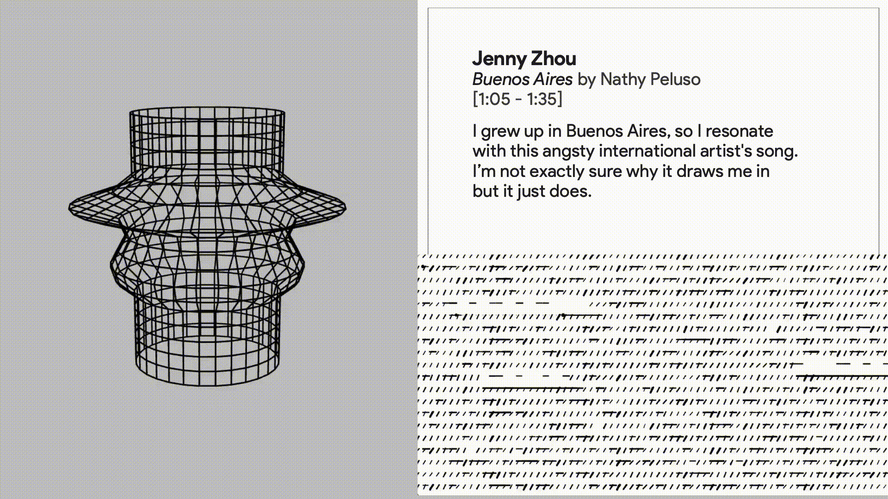

Echo + Form – A Case Study in Designing from the Inside Out

Spring 2025
Echo + Form is a project about how we can capture something intangible—like memory, emotion, or identity—and turn it into a physical object you can hold.
It started with a simple observation: the ordinary objects in our lives—a worn book, a childhood toy—carry invisible weight. They hold memories, comfort, and pieces of who we are. Through teaching a university course on ideation, I realized how reflecting on personal objects can reveal deeper patterns about ourselves. This idea grew into the foundation for Echo + Form.
The project explores how personal data—specifically, a person’s voice and their favorite music—can shape the form and surface of a handmade object. I chose voice because it’s incredibly personal and ephemeral. Your voice is like your audible fingerprint, shaped by your body, your emotions, your culture. It carries who you are, even after the sound disappears. To capture this, I built a real-time visualization tool where someone can say their name, and their voice literally shapes the curves and structure of a vessel, layer by layer.
To ground the project in something deeply human, I chose clay as the material. Clay has a long history of preserving human stories—from ancient civilizations using it to record myths, to modern artists embedding touch and emotion directly into its surface. It’s a material that listens, responds, and transforms, just like memory itself.
Beyond voice, I also incorporated personal music stories. Participants shared a favorite song and the story behind why it matters to them. Using code, I translated each song’s audio data into a surface pattern that would wrap around the vessel. The result is that each object becomes a layered portrait: its overall shape formed by the participant’s voice, and its texture and rhythm shaped by the music they love.
These vessels were produced using the traditional wheel-throwing method. I intentionally left the clay surface matte and tactile, incorporating raised patterns—like abstract braille—so the object could be experienced not just visually, but through touch.
The final pieces come together in an installation where visitors can move among the vessels, explore their physical forms, and engage with an interactive digital kiosk to learn the stories behind each one. They can also record their own name and contribute to the growing collection by generating a personalized vessel form. After the exhibition, the vessels return to the individuals who shared their voices and songs—designed to live on in everyday life, whether on a nightstand, a shelf, or sparked in a moment of conversation.
At its core, Echo + Form is about using both traditional craft and modern technology to create living artifacts—objects that don’t just look beautiful, but hold personal stories, memory, and presence. It’s about designing from the inside out, making the invisible—our emotions, identities, and histories—visible and tangible.